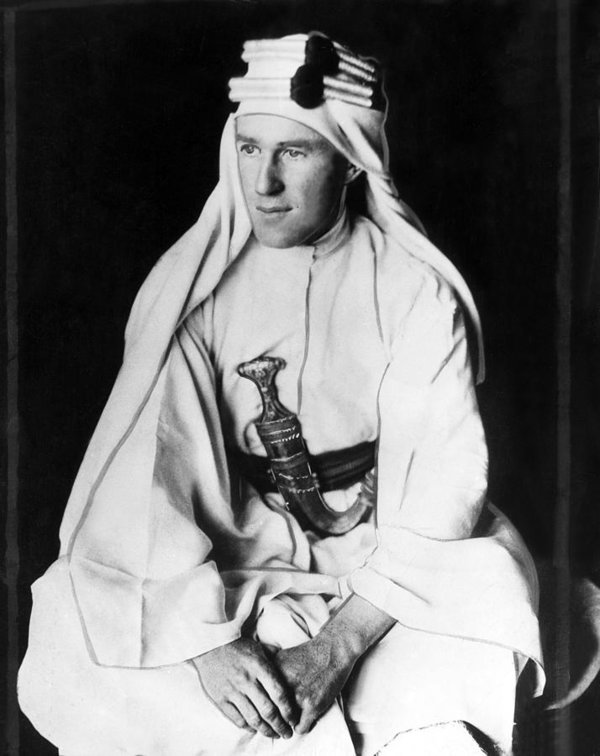
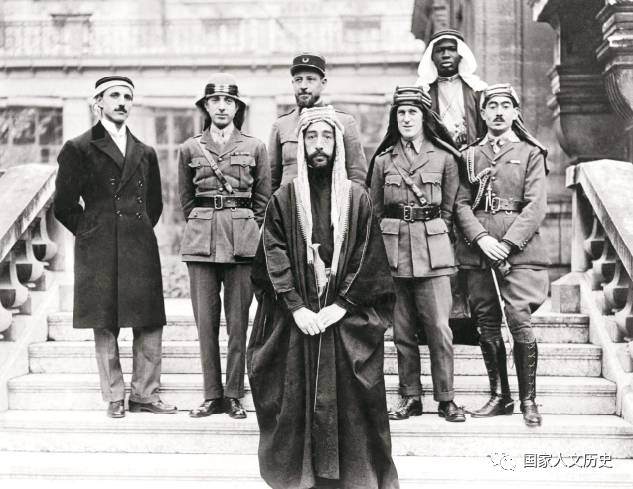

智慧七柱 从麦加到大马士革
摘录
前言
这是一场由阿拉伯人筹划和领导，为了在阿拉伯半岛达成一个阿拉伯民族的目标而奋斗的阿拉伯之战。
我们在枪林弹雨中出生入死，不会贪生怕死；然而当我们完成目标、新世界已具雏形时，老一辈的人又站出来，夺走我们的胜利，将这新世界又重塑成他们所熟知的旧模样。年轻人有能力打胜仗，但不知如何乘胜追击；面对老一辈时又束手无策。我们气喘如牛地说我们已经打造出一个新天地，老一辈则向我们亲切道谢，然后安然享用。
人皆有梦，但多寡不同。夜间做梦的人，日间醒来发现心灵尘灰深处所梦不过是虚华一场；但日间做梦的人则是危险人物，因为他们睁着眼行其所梦，甚至使之可能。而我就是如此。
阿拉伯人相信的是人，不是组织。
我虽然乐于担任轻松的职务，却不愿让自己的才能闲置。
简介 起义的基础
筋疲力竭的人羡慕那些已经累死的；因为成功看来还遥不可及，失败则近在咫尺又似是理所当然，如果能死得干脆，也是种解脱。
阿拉伯人有禁欲的天性。
闪族人的视野中没有半调色。
他们是一个有限的、心胸狭窄的民族，毫无好奇心，使迟钝的心智完全没有作用。他们的想像力很鲜活，可是没有创造力。亚洲的阿拉伯艺术少得几近于无，虽然他们的阶级是自由人，也很鼓励族人参与邻邦和农奴在建筑、陶艺或其他手工业上的才能。他们也无力掌控大型产业：他们的身心都没有组织。他们不曾发展任何哲学体系，没有复杂的神话。他们依循着部落民族与洞穴民族的偶像前进。他们是最不怨天尤人的民族，毫不质疑地接受人生的安排，视为理所当然。对他们而言，祸福都是无法避免、与生俱来的，只能享用，无法控制。自杀是不可能的，死亡则并不可悲。
这些没落的宗教遗迹就散布在沙漠与农耕地交会处，意义深远。那说明了所有这些宗教的产生方式。这些宗教是声明，不是辩论，所以需要一位先知来宣扬。阿拉伯民族说他们曾有过四万位先知：我们有记录的至少就有数百位。他们之中没有一个是出自荒野，不过生活却都衍生自同一种模式。他们的出生将他们置身于人口稠密之地，一种莫名的激情却驱使他们投身沙漠。他们住在沙漠中或长或短的时间，过着弃绝躯体的冥想生活；然后再带着想像出来的讯息回来宣扬，向昔日的同伴，也就是如今对他们满心怀疑的同胞宣教。三大宗教的创立者都遵循这循环：这种巧合日后经由无数承先启后的先知之实践，成为一种铁则，这些先知中有若干不幸者失败了，这些失败者的教义我们或许也认定有相当真理，不过这些人时运不济，无法找到足够的善男信女蔚成风潮。对城市中的思想家而言，想前往尼崔雅（Nitria）的冲动简直是无法抗拒的，或许不是因为他们发现神就住在这里，而是在它的寂静中，他们更明确地听到自己带来的鲜
所有闪族宗教的共同基础，无论成功者或失败者，都是尘世不值眷恋的思想。
每位游牧民族都有他自己的宗教，不是口述或传统所能表达的，而是凭他的直觉。
沙漠中的阿拉伯人最大的喜悦便是自我抑制。
闪族人在纵欲与自制间徘徊。
我激起这么一道浪（而且不是最小的），它越过理念，直达浪峰，然后倒下来坠在大马士革。这道浪的冲击受到既得利益者的抵抗而受挫，但终将成为下一道浪的基础，当时机成熟时，大海将再度扬波。
阿拉伯文明一向带着抽象的特质，讲究德性与知性而非实用；而缺乏公共精神，使他们杰出的私人特质派不上用场。
他们丧失了地理上的感觉，以及种族、政治、历史的记忆；不过却紧紧抓住自己的语言，将语言推崇得几乎成为自成一体的祖国。每个伊斯兰教徒的第一项义务是研读伊斯兰教的圣书《古兰经》，这也是阿拉伯文学中最伟大的不朽杰作。
杰马勒惨无人性的高压手段使叙利亚境内的各阶级与教派同仇敌忾，因而使一场联合起义成为可能。
土耳其衰亡的原因是已面临强弩之末，试图以日渐拮据的资源来维续它所继承的庞大帝国。奥图曼民族的儿童曾借着剑表现勇气，而今剑已落伍，取而代之的是更致命也更科学的武器。
我们人数不多，而且几乎都是英国驻埃及情报局局长克莱顿身边的人马。克莱顿是统御我们这群脱疆野马的最佳人选。他冷静、客观、眼光独到，义无反顾地担起重责大任。他放手让部属自由发挥。他的观点与知识同等广泛，而且他采取潜移默化的领导方式，绝不靠颐指气使的咆哮。他的影响力很难一眼看透。他就像流水，或无孔不入的油，静悄悄且持之以恒地穿透万物。克莱顿几乎可说是无所不在，不过也很难说到底有多少事迹真的是他的功劳。他从不会有形地领导我们，但他的观念与采取有形领导的人一样能让我们接纳：他的稳健与庄严肃穆令人印象深刻。在实际事务上他采自由放任，不守常规，不修边幅，是个可以让独立自主的人忍受的人。
如果阿拉伯人获得良好建言，起义活动必可成功。打从一开始我便是这行动的推动者；我对它充满期待。
卷一 发现费萨尔
贝都因人是侯赛因亲王惟一能掌握的战士，起义也得靠他们的支援。
阿拉伯起义可谓是朝圣之旅的回程，往北折返，回到叙利亚，以一个理想回报另一个理想，以对自由的信仰回报他们昔日在宗教上的信仰。
不过基于舆论与个人利益，主人都不致虐待他们，而且伊斯兰教教义认为善待奴隶是积功德，所以奴隶到最后几乎都可以获得自由。
我看了他一眼，便认定这就是我来阿拉伯想找的人–率领阿拉伯起义获得胜利的领袖。
土耳其人这种惨无人道的兽行令阿拉伯人大为震惊；因为阿拉伯人作战的第一原则便是不可侵犯妇女；第二原则是年幼无战斗能力的儿童也要放过；第三，带不走的财物就留着不要破坏。跟随费萨尔的阿拉伯人发觉他们面对的是截然不同的作战方法，因此纷纷打退堂鼓，回去调整自己的心态。
军饷没有着落，为提振士气，费萨尔在一口精美的箱子内装满石头，上锁后还以绳子牢牢绑住，每次行军时都由他的侍从亲自护送，每晚小心翼翼地抬入他的帐篷。他们几个兄弟就借着这种自欺欺人的方式，设法维系住几乎要瓦解的部队。
我的结论是：部落人只适合防守。他们贪婪成性，见财眼开，使他们很适合从事掠夺战利品、拆毁铁路、抢劫沙漠商队、偷骆驼等任务；然而他们太过我行我素，无法接受指挥或集体行动。一个单枪匹马可以表现出色的勇士，通常是个很蹩脚的军人。
由威仪赫赫的费萨尔到最低阶的小兵，每个人谈论的主题都是巨炮、巨炮、巨炮。
卷二 阿拉伯攻势展开
我不像军人，也痛恨当军人。
阿拉伯人不会鄙视非洲人，他们厌恶的是印度人。
费萨尔以身作则，替身旁的每一个人打气，设法提振士气。
费萨尔的自制力也同样令人叹为观止。
总而言之，我认为如果阿拉伯建国运动的热忱未能促使阿拉伯人进军大马士革，则将使起义名不正言不顺。
费萨尔单枪匹马前往奈赫勒穆巴拉克，以一个晚上的时间使朱罕纳族接受他为他们的领袖。
这凸显出土耳其部队以大量德国制的现代化装备，在无道路可通的情况下，试图穿越崎岖且充满敌意的野地时，会面临何种障碍。
他们聚在一起时并不可怕，因为缺乏团队精神，也没有纪律和相互依赖之心。单位越小，表现越好。一千个人会成为乌合之众，无力对抗一连训练有素的土耳其部队，不过三或四个阿拉伯人在自己的山中，便足以遏阻一打土耳其人。拿破仑也曾对马穆路克有过如此的评语。
这些欧洲顾问不了解起义其实不是战争；事实上，在本质上更倾向于是争取和平–或许可称为全国性的罢工。所有闪族人团结一致，拥抱同一种理念、同一位有武装的先知，掌握无限的可能性。若能交由高人指点，它的战功将不只是收复大马士革，而是一九一八年所达成的攻占君士坦丁堡。
我们已经不再是阿拉伯人，而是一个民族。
住在沙漠中最烦人的一点，就是饮食起居都是团体生活，每个人从早到晚都可以听到及看到其他人在做什么。
卷三 铁路攻防
英国既不是恶意，因为我们在其他方面的要求他们都能提供；也不是吝啬，因为它提供阿拉伯人物资与金钱的协助，总数逾千万镑。我相信那纯粹是出于愚蠢。
在这些巨炮闲置的那一年间，对每个进入苏伊士运河的阿拉伯军官而言，它们都是法国对阿拉伯建国运动怀有敌意的铁证。
布雷蒙没告诉我（但我心里有数），他打算借着以一支英法联军抢在阿拉伯部队之前登陆阿卡巴（就如攻占拉比格），来遏阻阿拉伯建国运动，使他们局限于阿拉伯半岛，并迫使他们将军力耗费在攻打麦地那。基于日后将会被出卖的那些秘密协议，阿拉伯人对侯赛因亲王与我们结盟仍有疑惧，要是基督徒领军的部队占领阿卡巴，将使他们的疑惧获得证实，并瓦解他们并肩作战的意愿。
看到他们那种较低层次的生活，对我的自尊是一种伤害，令我很不自在。他们的存在反映了我们人类的卑微：就如一个神祇在看我们的生活形态。然而利用他们，将他们原可避免的义务强加在他们身上，更令我觉得羞耻。至于那些黑人，每天晚上在山边疯狂地击鼓为乐。他们的脸庞与我们有显著的不同，这点还可以忍受；不过他们身体的各部位竟然都与我们一样，这却令人痛心。
费萨尔捧着《古兰经》与新加入的效忠者宣誓，在他按兵不动时他们要蛰伏不动，在他冲锋陷阵时他们则要奋勇向前，绝不向土耳其人称臣，而且要善待每个说阿拉伯语的人（无论是巴格达人、阿勒坡人、叙利亚人或纯种阿拉伯人），并将阿拉伯独立的目标置于个人生命、财富及家庭之上。
在解放大马士革后欢欣鼓舞的几星期中，以及随后长达数月的理想幻灭期间，费萨尔凭借着勤奋与能力，赢得这场运动的领导地位。
他们治疗各种病症的方式，都是在患者身上与患处对应的若干部位烧个洞来。
因为阿拉伯人的一番好意，和他们的好客一样，自以为是，绝不会搭理患者的抗议。
似乎没有两场战争是相似的。敌对双方经常都不知道自己的目标，在错误中盲目摸索，直到局势获得控制。
如果他们愿意自行离去，这场战争便可结束。
最伟大的指挥官是直觉几乎都会成真的人。十分之九的战术确实都可以在学校中传授；然而那不合常情的十分之一则像水鸟点水而过，将军的优劣之判别也全在于此。它只能靠本能反应（经由不断的实战来强化），直到面临危机时成为自然反应，一种反射性动作。
我们发动的攻击可能只是有名无实，不是针对人员，而是物资；如此就不需要寻找敌方最强或最弱的部位，只需挑出可破坏的物资。
然而英国还是较为强盛，阿拉伯人只能在他们的阴影下生活。
对一般的阿拉伯人而言，火炉就是一所大学，他们在火炉旁生活，与族人闲聊，听他们部落的新鲜事、诗歌、历史、爱情故事、争讼、交易。他们从小在火炉旁闲聊，使他们长大后勇于表达意见，辩才无碍，可以在各种聚会中侃侃而谈。
阿拉伯的领袖展现过人的本能，全靠直觉判断，精确得使我们为之膛目结舌。他们像女人一样，可以立刻作出判断，不用费心思考，不用理性分析。看来似乎因为东方女性被排除在政治圈外，使她们第六感超强的天分也转移到男性身上。我们有时能出奇制胜，或许要归因于这种罕见的天分，阿拉伯建国运动从头到尾没有任何女性参加，母骆驼除外。
阿拉伯人对骨折不以为意。
贝都因人是很奇特的民族。对一个英国人而言，想和他们相处，必须有如大海般的耐心才行。他们做事极为随性，不好思考，嗜喝咖啡、羊奶或水，见到炖肉就狼吞虎咽，向人讨烟抽毫不觉得羞耻。他们在偶尔从事性行为的前后几星期，都会满脑子想入非非，不时以淫秽的故事刺激自己和听者的情欲。如果环境许可，他们会整天耽于酒色之欲。地理因素使他们无从受诱惑：阿拉伯半岛的贫瘠使他们生活简朴，随遇而安，刻苦耐劳。如果他们投入文明世界，很可能会像任何野蛮民族一般，沾染一身恶习；他们也会像野蛮人一样，因为没有心理准备而更是深蒙其害。
这种责难，就像一个将军抱怨自己的部队太差劲，事实上是承认我们自己缺乏远见，或是经常借由假谦虚，逛称我们虽然犯错，至少有智慧知道自己的错。
费萨尔一跃而起。奥达握住他的手亲吻，然后两人后退一两步，彼此端详-截然不同的典型，也是阿拉伯最杰出的两种极端，先知费萨尔与战士奥达，两人在各自的领域都是人中之龙，如今一见如故，惺惺相惜。
几个世纪前豪威塔特族由汉志前来，他们成为游牧民族的子孙，以身为正统贝都因人为荣。奥达则是该族之光。他非常爽朗好客，而乐善好施也使他虽曾由几百次掠劫中获利，却仍一贫如洗。他结过二十八次婚，曾在战场上负伤十三次，他所发动的战斗使他的族人和家人死伤无数。至今已有七十五名阿拉伯人成为他刀下亡魂，都是在战场上亲手杀的：除非上战场，否则他绝不开杀戒。至于被杀的土耳其人，奥达数都懒得数。在他领导之下，桃伟拉地区的战士已成为沙漠中最剽悍的战士，胆识过人，只要一息尚存，而且有仗可打，他们便自觉高人一等；不过也因穷兵黩武，使他们的人口在三十年间由一千两百人降至不到五百人。
他刻意与沙漠中几乎所有部落维持不睦关系，如此才有借口劫掠。
奥达将人生视为一则英雄传记。
卷四 远征阿卡巴
他的身体还很年轻，但善变的心老得比他的身体快–心会先死，和我们大多数人一样。
纳西尔平时虽然看来笑容可掬，却也只是强颜欢笑，他今晚就在纳闷，自己身为麦地那总督的家人，有钱有势，坐拥花园宫殿，何苦一头栽进来，当起什么沙漠冒险队的玩命队长。
这么流血流汗地牺牲卖命，又能多吃些什么、多喝些什么？
这样的人民需要由外来的战争和旗帜来团结他们，需要一个陌生人来领导他们，其权威建立在一个抽象的观念上：不合逻辑、不可抗拒、不能平等，直觉可以接受而理性却找不到赞成或反对的基础。
这两个少年让我很满意，他们很勇敢开朗，不像一般的阿拉伯仆人。他们挨打的疼痛已消退，再度活跃起来，骑术精湛，干活勤快。我喜欢他们和我在一起时无拘无束的模样，也很欣赏他们不顾外界眼光，彼此心有灵犀，默契十足。
但对我而言，我一向喜欢狂风沙，因为这种飞沙走石的热风，像是大自然刻意恶毒地要打击人类，勇敢地挺身面对它、挑战它、征服它，也是快事一桩。
毕竟，一个外国人很难影响其他民族的建国运动，对一个信基督教的文弱书生而言，要影响信回教的游牧民族，更是难上加难。如果我要求逃避责任以享受外国基督徒的权利，又要求他们不将我当外国人看，就不可能协助他们起义了。
奥达则开心地一再述说部落人与城市人的差别：沙漠中的人是休戚相关的生命共同体，城市人则各自孤立又互相竞争。
阿拉伯人通常是群居，如果有人太过注重隐私，会使他们认为必有隐情。与他们相处时对此必须谨记在心，并断然放弃想静一下的自私念头，这是参与沙漠战争最令人困扰的一点，也令人觉得很屈辱，因为对英国人而言，能一人独处也是个人尊严的一部分；我们可以闭起门自夸自豪，也没有人与我们竞争。
这种好高鹜远是典型的叙利亚人心态，他们很容易怀抱着各种梦想，同时又将目前的责任推到别人身上。
豪威塔特族人的治疗方式是用蛇皮包扎伤口，然后对着伤者读一章《可兰经》，直到他死亡。
蛇有个怪癖，入夜后喜欢躺在我们身旁，钻入毛毯内或睡在毯子上，或许是为了取暖。
我打从与费萨尔初次会面以来，就一再向他谆谆告诫，自由是争取来的，不是靠人施舍的。
在东方，人们信任的是人，而不是机构。
我们对土耳其的士兵总觉得很惋惜。土耳其的志愿役职业军官是基于个人野心而挑起战端-几乎是因为有他们才会有这场战争-我们不只希望他们能接受应得的报应，更希望连那些被召募入伍的小兵因他们的错误而蒙受的苦楚，也能由他们承担。
如果水不够大家喝，最好就是每个人都不要喝。
对阿拉伯人而言，胜利的重要成就之一就是穿着敌人的衣服。
我已疲惫不堪，很希望自己像他们一样静静躺着，不要像山谷中那群喧嚣杂乱的乌合之众，为了争战利品而互相叫嚣，或是夸耀自己的速度与体力能再熬过几次类似的痛苦。死后，无论我们是赢是输，都只能等待他人的盖棺论定。
卷五 转折点
费尽千辛万苦在这么个目标上，达成目标后对心灵或身体都没有产生什么重大的改变。
我们不知道该如何利用自己的天分来应付这种不受欢迎、一成不变的生活冲击。
一辈子习惯饥餐渴饮、三餐定时的英国人，用餐时间一到便开始饥肠辘辘，我们有时还将这种征兆美其名为饥饿，借此在肠胃中多塞些食物。阿拉伯人所谓的饥饿，指的是身体在长期劳累后因虚弱而即将昏厥所发出的呐喊；只要我们大餐的一小部分便足以供他们果腹，他们的消化系统会充分利用这些养分。游牧民族排泄物不多，替大地施肥的贡献很有限。
读者总想看英雄人物，不愿去体会老奥达人性的一面，他在历经腥风血雨的杀戮后，却与手下败将暗中勾结，而如今他们的生杀大权又操在他手中。事实从来不像书中所说的那般美好。
占领沃季时，赢得了汉志战争；占领阿卡巴后，汉志战争便告结束。费萨尔的部队已经完成它在阿拉伯的任务，如今在总指挥官艾伦比将军的率领下，将扮演解放叙利亚的角色。
目标与理念都必须经过转化，以具体的物质钱财来表达。沙漠居民太过与世隔绝，物质生活太穷困，因之难以认同目标与理念这种抽象概念。
我们必须使他们团结一致，共同对抗土耳其。费萨尔的机会与困难都在于叙利亚这种错综复杂的政治局势。
大马士革如皎洁明月，阿拉伯人望之如众星之拱月：这座首都之城绝不会甘心臣服于外族的。
打通舆论的万能钥匙在于共通的语言：那也是开启想像力的钥匙。伊斯兰教徒的母语是阿拉伯语，因此自认为是选民。他们的《古兰经》及文学经典的文化遗产，使阿拉伯语系的各民族融为一体。爱国情操，通常是指爱土地或种族，对他们则成为对一种语言的忠诚。
另一种让阿拉伯各民族能结为一体的维系力量，是昔日哈里发的丰功伟业，即使经过土耳其几世纪的统治，其子民仍缅怀不已。很意外地，这些传统比较类似《一千零一夜》，而不像纯粹的历史，也使阿拉伯小兵认为他们的往日光彩远比目前的奥图曼土耳其更为绚烂。
然而我们知道，这些都只是梦想。叙利亚的阿拉伯政府虽然有阿拉伯的偏见加以维系，然而与土耳其政府、或外国托管、或历史上的哈里发一样，都是非自发性的。叙利亚仍是个有浓厚色彩的种族与宗教大拼盘。若尝试要将它们统一，只会沦为全是补丁、硬拼凑成的四不像，人民也不会领情，他们宁可回归狭隘的地区统治。
而为了胜利，花费任何物质上及道德上的代价都不足惜。
我们的战术必须是得手就跑：不是强力猛攻，而是点到为止。
我们都为同一理想而战，没有部落间的纷争，但也不敢奢求有团队精神。
任何一个阿拉伯士兵在信念动摇时，随时都可以回家，不会受惩罚：荣誉是惟一的契约。
伴随军纪而来的必是复合战或社会战–那种形式的战争中，战士是由工厂到补给单位这个大体系的产品，并由此一体系维系他在战场上的活跃。
游击队必须拥有自由运作的空间。
上帝没有挑上他们当英国人；他们有责任成为他们人种中的佼佼者。我们就这么赞赏当地风俗民情，研习他们的语言，立书撰写该国建筑、民俗以及即将没落的产业。
法国人虽然也自认是完美的选民（那是他们的教条，而不是真心感受），接着却与我们反其道而行，他们鼓励附庸国模仿他们；虽然再怎么模仿也无法达到同样层次，但借着模仿已可提升他们的水准。
奥达野心勃勃地想利用我们必须仰赖他帮忙的良机，整合各个部落。
我认为基督教是这个尘世间第一个宣扬爱的信仰，沙漠与闪族人则禁绝了爱。
基督教发源于加利利，使它免于成为只是闪族无数天启教中的一种。加利利是叙利亚的非闪族区，对一个虔诚的犹太人而言，与这个地方接触几乎等于是自甘堕落。耶稣基督鉴于此地的思想自由，选择在此宣扬他的福音。
他们无法忍受眼睁睁看别人去突袭，自己却只能与妇女胡闹。
那些阿拉伯人无法看出这一点，因为他们不了解土耳其因战线长而必然极为依赖补给线。
贝都因人善于利用地形，一向不将愚蠢的土耳其人看在眼里，不在乎与他们厮杀。
那些毛躁的贝都因人，就是无法安静地坐上十分钟，总是坐立不安或没话找话说。
阿拉伯部队在打胜仗之后总是纪律涣散，所以我们已不再是一支斗志高昂的突击队，而是走得跌跌撞撞的行李队，驮负的战利品足以让一个阿拉伯部落用上好几年。
他们已独力打赢一场仗，得过痢疾，靠骆驼奶维生，学会骑骆驼轻松地日行五十英里。
卷六 突袭桥梁
我是艾伦比摩下的军官，深获器重，他也要求我力求表现以为回报。我同时又是费萨尔的顾问，费萨尔对我的诚信与能力依赖之深，有时几乎是毫不迟疑地言听计从。可是我却无法向艾伦比解说阿拉伯的全盘局势，又无法向费萨尔透露英国的详细计划。
英军大都晓勇善战，将军却常莫名其妙地打一场胜仗后，又迷迷糊糊地将战果拱手让人。
火爆之人常有的满头卷发。
在这人口稀少的沙漠地区，每个有身分地位者都彼此认识，他们不研读书本，但会研究其他人的家世。如果不了解别人的家世，不是被认为没教养，便是被当作陌生人；而陌生人是不能获准参加家庭聚会或会议的，也不会获得信任。我参与阿拉伯人的起义，最感到吃不消但也是最重要的，便是每次遇到一个新部落，便得绞尽脑汁将他们的点点滴滴巨细靡遗地铭记于心。
他们同情正节节败退的土耳其人。
阿拉伯人不尊重强势，他们比较尊重技术。
每个陌生人置身于他们身旁时都会坐立不安。
他们也知道，置身于沙漠中，注定要与一个敌人做永无止尽的抗争，这个敌人不是这个世间，不是人生，什么都不是，而是希望；而且失败似乎是神用来解放人类的手段。
若是唾手可得的成功，将毫无荣耀可言，不过若明知会失败而仍愿赴汤蹈火，则将可望普受景仰。
对一个眼光远大的人而言，失败才是惟一的目标。
以一把笨重的匕首刃狠狠地敲打头部，直到鲜血淌出滴到腰带上。那会使头部疼痛但不会有生命危险，刚敲击时的疼痛与随后的疤痕可以使犯错者想起自己承诺永不再犯的约定。
我们当时几乎是不择手段，根本无法冷静思考，只绝望地认为阿拉伯起义一直差临门一脚，深恐到头来恐怕又会沦为以五分钟热度追求空幻目标的另一个例子，烈士们前仆后继地横尸荒山野地间，却仍一事无成。
这次的困难在于机枪手是印度兵，他们虽然在吃饱时也算是个顶天立地的男子汉，但在饥寒交迫时，却只是个手无缚鸡之力的半丁。
每个人都听我们说这些日用品由世界各地经海路运送到阿卡巴，堆得满山满谷；阿拉伯建国运动对他们而言原本只是基于民族情怀、本能和意愿，如今也变得有利可图了。
由于我经常得承受皮肉之痛，因此总是尽量略过起义期间身体遭受的痛苦；然而我在阿拉伯期间，除了因为成为欺瞒阿拉伯人的从犯而受良心谴责，及因担负指挥的重责大任而压力沉重外，身体更是没有一天能免于酸楚疼痛。
在每次换人鞭打我时，他们会将我的头扳转过来，让我看着第一鞭打下去，白色的肌肤先是肿起，看来像铁路一般，然后颜色慢慢变深，成为深红，血也渐渐渗出来。
以前与率真的贝都因人相处时，他们会单刀直入地叫我“喂，劳伦斯”，然后直言无讳地将他们的需求告诉我，绝不会拍我马屁；而如今访客大都是些拘泥客套的城市人，开口闭口王子、大人、救星地先将人捧上天，然后才提出他们的要求，令人烦不胜烦。
我设法平易近人，即使如此会使他们每天都来找我也不打紧。我也以身作则，使生活力求简朴；我没有帐篷、厨师、仆人，只有护卫队。他们是战士，不是仆役，结果却看到那些拜占庭富商巨贾，极尽奢华之能事，败坏我们安贫乐道的风气！
我们在傍晚满天晚霞中离开阿兹拉克，一群白鹤自我们头顶掠过，迎向夕阳，看来像是抽出箭筒的箭矢。
我朝他们大笑，这在面临危机时是应付贝都因人的绝招。
卷七 死海战役
后来费萨尔坐在安乐椅上，抽着他常抽的烟，如梦似幻地告诉我，他终于知道天堂的设备应该是什么样子了。
亚格利人向来惟利是图，若嫌薪饷太低便会怠工，因此声名狼藉；然而阿拉伯起义期间最英勇的行为，却也是一个亚格利人所缔造，他曾两度由下水道游入麦地那，调查过该城之虚实后，再回来向我们做完整的报告。
他们几乎觉得当奴隶的体验胜过当主人，而且也省得每天劳神费心。
他们自甘卑贱，乐于为主人抛头颅洒热血，因为他们在精神上可与主人平起平坐，而且他们的主仆关系也是你情我愿，毫无勉强。
彼此之间的嫌隙，使他们无法联合起来杯葛我；而他们不同的背景则让我触角宽广，由阿卡巴到大马士革，由比沙巴到巴格达，都可以深入进行了解。在我服役期间，这支部队共有六十人死亡。
同样地，虽然睡眠对我而言仍是世上最大的乐事，我却仍能以在坐鞍上左摇右晃的夜行军来取代睡眠，或在并未过度操劳的情况下赖床贪睡。这种几年来养成的率性而行的习惯，使我特别适合这种生活；不过，当然，对我而言这种习惯一半是出于自我磨练，一半则是情势使然，和阿拉伯人一样，也是苦过来的，并非得来毫不费功夫。不过我的意志力比他们强。他们在我意气消沉前便已心灰意冷，相较之下，使我看来似乎比他们更吃苦耐劳，而且精力充沛。
我们在起义期间，经常看到人们自愿或被迫面临残酷的耐力极限；然而从来不曾出现过体能的崩溃。崩溃总是肇因于道德的脆弱，侵蚀了肉体，而肉体则无法控制意志。
我们在远离战线的阿卡巴也看到起义腐败的一面，基地中的道德状况令人不敢恭维。
于是他策马下山，直达可以看见村落最东边的房舍处，然后勒住马，朝他们招手，以他雄浑的声音吼道：“龟孙子，你们可认得奥达？”他们发现战神现身，顿时手脚发软，不战自败。
因为东方人的政府所以能掌握政权，不是靠着高压或人民的认同，而是社会大众普遍懒得过问，不在乎由谁掌权。
卷八 好事多磨
他有使好事锦上添花的天分，这在英国人中很罕见。
妇女变成一种从事劳动的机器，男人的心灵层面只能在同伴间获得满足。男人间哥儿们的情谊也应运而生，让人性不只局限于肉体的接触。
在阿拉伯正规部队中，没有惩罚，在我们所有部队中都可看出来这种重大的差异。他们没有正式的纪律，没有主从关系。
事实上，许久以来他也确实像行尸走肉，对生命厌倦的人常会爱上死亡，在奋力一搏后虚弱地凯旋撒手西归。
扎伊德率领乌黑达北方半数的部队，也力求表现。他旺盛的精力比费萨尔温文儒雅的作风更合职业军官的口味；所以一文一武两兄弟配合无间，也因而得以吸引各路人马汇聚在起义的大旗下。
艾伦比欠缺挑选幕僚的眼光，主要是他自己太过杰出，使他的部属似乎没必要太出色。
卷九 打破均势局面
非常专业，令人安心，对我这个在自己不按牌理出牌的游击战中也勉强算是个将军的人而言，更是弥足珍贵。
他们总认为我说这种话时太自命不凡，但我的信心并不是在于能将一件事做得尽善尽美，而是在出状况时设法补救，不是任其自生自灭。
我忽然萌生一丝乡愁，自己浪迹于阿拉伯人之间，利用他们崇高的理想，使他们对自由的热爱成为协助英国打胜仗的另一个工具，一念及此，更加深我的愁绪。
我们这些长年旅居国外的英国人，总是以记忆中的祖国为荣——这个与住在其间的居民毫无关系的怪异祖国——因为最爱英国的人，通常最不喜欢英国人。我置身于阿拉伯半岛，迫于战争的需要，除了出卖自己的诚信来换取祖国的生存，别无选择。
我是惟一没留胡子的，再加上总是穿着一身雪白丝袍（至少在外表），头上系着麦加制的金黄色与鲜红色头巾，并佩着金质匕首。
费萨尔深居帐篷中，担任我们的领袖；然而事实上，他是国家主义最忠贞的仆人、工具，而不是它的主人。不过，没有人比他更高贵。
对理性的人而言，国家主义的战争与宗教战争一样是个骗局，没有什么是值得奋战争取的，奋斗、战争也无法维护与生俱来的美德。生命是那么私人的东西，没有任何情况可允许一个人对别人施暴：虽然一个人的死是他最后的自由意志，免于遭受无法承受的痛苦之手段。
他们是我们的傀儡，全心对抗敌人。他们像粗糠般受我们摆布，在风中飘舞；但他们不是粗糠，而是最勇敢、最单纯、也最快活的人。
军人承受的只是偶尔的打击，我们的意志则必须扮演工头直到工人昏倒，并将自己留在安全地点，推别人入危险之域。若为一个我自己也不相信的目标而自愿牺牲生命，或许相当壮烈英勇；但要别人为我铭记在心的影像而由衷地去送死，却是偷窃灵魂。
替别人受苦，简单的说就是给人一种超凡入圣的感觉。
真诚的赎罪必定是不求回报而且有赤子之心的。
我要求他不要像他父亲一样，轻信我们的承诺，而应信任自己的杰出表现。
如果土耳其可以由安曼撤兵，将此地交给阿拉伯人管理，他可以向贾玛尔保证阿拉伯陆军不会再与他们征战。
如果欧洲战争失败了，那将成为他们惟一的生存之道。我一直有隐忧，担心英国或许会在费萨尔与土耳其和解前先发制人，不是与国家主义者和谈，而是自行与保守的土耳其人达成协议。
如今外界对我的表现之赞扬，我已无法推却；若加以婉拒，会被认为是谦虚、妄自菲薄，而且这些事迹很吸引人——因为群众总是喜欢相信浪漫的故事。
我渴望扬名立万，也恐惧别人知道我喜欢出名。对自己的渴望成名深觉不耻，使我拒绝接受任何殊荣。我几乎像贝都人一样珍惜自己的独立性，但缺乏想像能力，只能在画像中才能看到自己的影像，也只有无意中听到别人对我的评论，才能建立自我印象。
我渴望能掌控妇女及动物，每当我看到一个军人与一个女孩在一起，或一个男人在逗一只小狗，我便会自怨自怜，因为我期望与他们一样肤浅，一样精于此道；而我的狱卒将我拉回来。
费萨尔是个勇敢、虚弱、无知的人，试图从事只有天才、先知或重大要犯才做得来的事。
当脑中出现强烈的渴求时，我总是会奋斗，直到只需张开手就可得到它，然后我会掉头就走，对于那是自己能力所及，觉得心满意足。我只是追求自我肯定，丝毫不在乎别人是否知道。
他知道他们参战不是为了让他巩固大权，而是为了解放自己的国家，追求自治。侯赛因国王的权力欲熏心，已至无法自制的地步了。
那是我对阿拉伯人的期待，也是我之所以不辞千辛万苦、弹精竭虑，与他们一起出生入死的原因——得靠费萨尔与我们并肩作战，不要受军事任务所分心，而是准备接收并运用我们所替他打下的地方之政治价值。
卷十 华宅落成
几年来所宣导的运动已然进行到高潮阶段，一个统一的国家将朝它具有历史意义的首都迈进。我深信这件亲手锻造的武器足以达成我的最终目标。
两个民族在面临危机时，一个内敛，一个外放。
门板、窗板、门框、窗框，连楼梯的台阶，全被拆得一干二净。
他打破教科书上的兵法陈规以适应这场战争，并竭尽所能地提供他们精神上与物质上、军事上与政治上的各种支援。
我觉得有点心虚，在这里享受白色餐巾、咖啡、勤务兵侍候，而弟兄们还在恩泰耶像蜥蜴般趴在乱石堆间，吃没发酵过的面包，等下一架飞机来轰炸。
“责任”就像歌颂它的人一样，是可怜的东西。
攻占大马士革代表东线战场的结束，而且，我相信，也是全面战争的结束，因为轴心国是互相依存的，它们最弱的一环——土耳其——战败，将会使其他各国也兵败如山倒。
历经千辛万苦，总算可解甲归田，每个人各自回去处理自己的事务，忘掉一些疯狂行径：因为对大多数人而言，这都是第一场战争，我们将战争结束看成是休息与太平。
我们往村内走，看到其他的男性与女性尸体，还有四具婴儿的死尸，景象惨绝人寰；这才知道，村中的寂静意味着死亡与恐惧。村子外围有道低土墙，是羊栏，我看到墙头有红白相间的身影，趋前一看，发现是个妇女趴在上头，臀部朝上，被一把刺刀由裸露的双腿间插入，钉在墙头，死状极惨。她是个孕妇，身旁还有其他尸体，总共有二十人左右，死法各不相同，却都是受尽凌辱惨死。
查基歇斯底里地狂啸，在这片高地午后温暖的阳光与清新的空气中，听来分外凄凉。我说：“你们谁杀的土耳其人多，谁就是勇士。”说完我们转身朝敌军追过去，沿路将一些落单在路旁向我们求饶的敌军逐一射倒。一个土耳其伤兵，光着上身，无法站立，坐着向我们哭泣。阿布杜拉掉头离去，但查基高声咒骂着，冲上前朝那人的胸膛补了三枪，血泊泪淌出，他的心仍在跳动，噗，噗，噗，越来越慢。
惟一的例外是德国部队；在此，我首度以杀害我兄弟的敌人为荣。他们离家两千英里，前途茫茫，无人引路，情况疯狂到足以令最坚强的勇士崩溃。然而他们仍军纪森严，像战舰般在土耳其人与阿拉伯人间左冲右突，面不改色，默不作声。他们遭到攻击时立刻停下，就地掩蔽，有条不紊地还击。他们不会手忙脚乱，不哭泣呐喊，不犹豫迟疑。他们表现卓绝。
村落里的所有鸡只都不翼而飞，还有三名印度骑兵因为觊觑纳息尔的军旗银质的旗杆，竟把军旗整支取走了。这是尖锐的对比，英国将军敬礼，印度骑兵偷军旗；这个对照更加深阿拉伯人对印度的种族歧视。
我脑中浮现无数名字，每个名字想起来都令人肃然起敬：雄浑壮观的兰姆、灿烂辉煌的佩特拉、人迹罕至的阿兹拉克、清新脱俗的巴特拉。然而人却变了。死神已夺走那些温和的人，苟活者的聒噪令我痛心。
我也恍然大悟，制服的秘密就是可使一群人整齐划一，有威严，没个人特色：使一个团体像是一个人。这种死气沉沉的制服使穿着的人与日常生活隔绝，象征着他们已将意志与身体都卖给国家：签约服兵役，不因一开始是自愿从军，而比较不那么悲惨。
战争的奇特力量使我们全都以作践自己为己任！
他信心十足地认为，他充分信任必可得到绝对服从的回报。
纳西尔就在前头，我们将这消息转告他，让他得以风风光光地进城，这也是他历经百战后应得的殊荣。
起义人士，尤其是成功的起义人士，难免都是难以驾驭的臣民，也是对如何驾驭人毫无概念的地方首长。费萨尔最遗憾的责任就是必须将替他打天下的战友摆一边，由曾经对土耳其政府最有助益的人士取而代之。纳西尔的政治智慧不足以洞悉这一点；努里.赛义德则看得很透彻，努里.沙兰亦然。
我则在这静得出奇的空当，看清自己的孤独，以及参与这场运动的无厘头——因为在所有听者中，惟有我觉得这件事很悲哀，那段词句了无意义。
所以我对他们的错误选择感到痛心，然而也对他们自觉羽翼已丰，可以否决我而觉得欣慰。
费萨尔浓眉大眼，脸色苍白，面容憔悴，像一把精致的匕首；艾伦比则虎背熊腰，脸色红润，踌躇满志，是掌握世局的列强最适合的代表人物。
总结

“人皆有梦，但多寡不同。夜间做梦的人，日间醒来发现心灵尘灰深处所梦不过是虚华一场；但日间做梦的人则是危险人物，因为他们睁着眼行其所梦，甚至使之可能。而我就是如此。”
这段话我最早是从顽皮狗的神秘海域里面第一次听到，现在终于一睹原著的风采。第一次世界大战中，英国对抗奥斯曼帝国，除了主战场之外，以埃及为跳板，安排人员到阿拉伯半岛看是否能够在后方动摇奥斯曼帝国的统治。实际上英国并没安什么好心，英法已经就战后中东的殖民做好了协议划分。所以说一战是一场非正义的帝国主义战争恰如其分。
劳伦斯正是在这种情况下来到了阿拉伯。当时不过28岁，而英国当局也并没有给他太多支持；就如同当年的共产国际的李德，拿着一把尚方宝剑就来了，实际上英国本身并没有赋予他太大的权力，但是当地人却觉得他类似钦差大臣一般。然后他在侯赛因的四个儿子里选中了费萨尔作为合作对象，扶持他的起义工作。英国政府本身并没有任何协议说要帮助阿拉伯独立，或者建立什么“大叙利亚”；但是劳伦斯的推动下，他希望阿拉伯人能自己民族独立，而不能过度依靠外援（后来看到更大的问题还是法国人）。从麦加起兵，打下了延布以及沃季赫；然后劳伦斯发现奥斯曼帝国的正规军非常依赖铁路线来运送补给，于是发挥当地部族的特长（部落战士并不适合正面作战，纪律性太差）开始了游击战争，不停破坏铁路线，并最终占领了阿卡巴。

占领阿卡巴之后，汉志战争就打完了。之后，以阿卡巴为跳板（天然优良港口，从此英国可以从海路支援中东战场）与英国盟友一起开始了解放叙利亚的战争，也就是攻占大马士革。大马士革攻占之后，劳伦斯旋即请求离职，离开了阿拉伯。一直到巴黎和会还在为阿拉伯争取独立而奋斗，但是显然无力挽回什么。就像他自己说的“我们在枪林弹雨中出生入死，不会贪生怕死；然而当我们完成目标、新世界已具雏形时，老一辈的人又站出来，夺走我们的胜利，将这新世界又重塑成他们所熟知的旧模样。年轻人有能力打胜仗，但不知如何乘胜追击；面对老一辈时又束手无策。我们气喘如牛地说我们已经打造出一个新天地，老一辈则向我们亲切道谢，然后安然享用。”
劳伦斯一直处于一种矛盾当中，即英法等帝国实际上并没有给出类似民族独立这种承诺，即使口头上的也没有；而他在阿拉伯做的事情却是帮助本地人争取民族独立，而且他也是这么跟对方说的。“吾日三省吾身：为人谋而不忠乎？与朋友交而不信乎？传不习乎？”，在劳伦斯自己看来，至少自己占了不忠不信。
不同战争有不同的打法，都需要根据参战各方的情况，国际环境等来拟定。阿拉伯半岛很缺水，属于热带沙漠气候，因此在书中最重要的交通工具是骆驼，而水井成了很重要的战略资源。当地人口稀少，仍然以部落为基本统治单位，在书里最长的记录都是关于部落间的交流、骑着骆驼赶路、避暑，而战斗实际上都并不怎么激烈。土耳其与阿拉伯实际上也没到国仇家恨的地步。基于此，劳伦斯制定的铁道游击的策略很奏效；但是在如此短的时间内推翻了土耳其的统治，根基不稳，所以战后一旦法国掺合进来，马上就打不过了。除非仍然能采用人民战争的形式赶走法国，但所谓的阿拉伯民族主义并没有深入人心，叙利亚本地人也并不关心谁执政。这有点类似国民政府，一夜之间获取了政权，也自然有其坏处。
后记
- 劳伦斯
劳伦斯战后过着平淡的军旅生活，1935年在车祸中死去。 - 费萨尔
巴黎和会之后费萨尔不满决议，但被法国在大马士革以西击溃。之后在英国的扶植下，费萨尔成为了伊拉克王国的第一任国王，但他一直强调自己也拥有叙利亚的统治权，直到1933年去世。1958年下层军官发动政变，将其孙子以及其他主要贵族枪决，伊拉克王国至此终结。 - 内志
汉志地区（也就是由麦加到阿卡巴的狭长地带）最终被内志的沙特统一，成为了今天的沙特阿拉伯的一部分。 - 叙利亚
叙利亚这个由罗马语衍生来的名称，意指政治上的一盘散沙。大马士革是穆罕默德的弟子（逊尼）之后，叙利亚地区贵族建立的第一个王朝–倭马亚王朝（白衣大食）的首都。因此阿拉伯人以麦加为宗教圣地，而大马士革则为政治首府，这是阿拉伯人能追溯的最早的帝国辉煌场景。阿勒颇是叙利亚的第一大城，也是丝绸之路的终点。 - 土耳其
土耳其人能追溯到土库曼斯坦的塞尔柱人，于1453年攻下东罗马帝国的君士坦丁堡（伊斯坦布尔）,建立奥斯曼帝国（之后丝绸之路断绝，西方人开始寻找水上丝绸之路，于1492年发现了新大陆）。在一战战败之后，凯末尔驱逐了希腊人的入侵，争取了民族独立，废除了君主制，开始了土耳其的现代化。